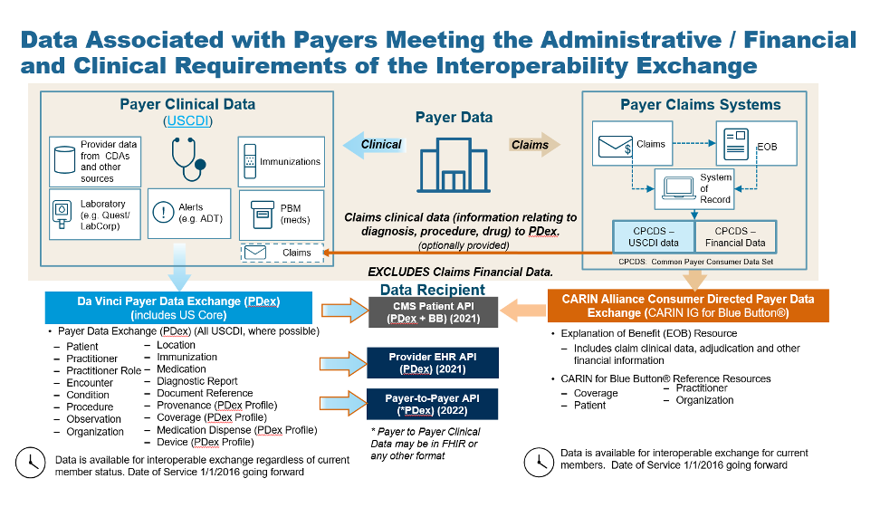

Da Vinci Payer Data Exchange
2.0.0 - STU2

Da Vinci Payer Data Exchange
2.0.0 - STU2

Da Vinci Payer Data Exchange - Local Development build (v2.0.0) built by the FHIR (HL7® FHIR® Standard) Build Tools. See the Directory of published versions
| Official URL: http://hl7.org/fhir/us/davinci-pdex/ImplementationGuide/hl7.fhir.us.davinci-pdex | Version: 2.0.0 | |||
| Draft as of 2024-01-04 | Computable Name: DaVinciPayerDataExchange | |||
The Payer Data Exchange (PDex) Implementation Guide (IG) is provided for Payers/Health Plans to enable them to create a Member’s Health History using clinical resources (based on US Core Profiles established from FHIR R4) which can be understood by providers and, if they choose to, committed to their Electronic Medical Records (EMR) System.
The PDex work group has made changes to the original version of the IG following the publication of the final CMS Interoperability and Patient Access Rule.
The STU2 version of the IG incorporates changes to support the sharing of Prior Authorization information with members, providers and other payers. This is done through the profiling of the ExplanationOfBenefit resource.
CMS Guidance defines two sets of data to be made available by payers in the Patient Access API: Claims and Encounter Data and Clinical data. They provide links to specific implementations guides for the Patient Access API to provide guidance. Use of these implementation guides is not required, but if used these guides will provide information payers can employ to meet the requirements of the policies being finalized. The CARIN Consumer Directed Payer Data Exchange IG (CARIN IG for Blue Button®) defines how Claims and Encounter Data are to be provided; This DaVinci Payer Data Exchange IG (PDex) and the US Core IG define how Clinical Data is to be provided.
There are two parallel paths pursued by the CARIN Alliance (Creating Access to Real-time Information) and the Da Vinci Project related to providing health plan data to various stakeholders. CARIN Alliance approaches the issue primarily from a financial (claims) perspective, with some limited associated clinical data. The Da Vinci Project approaches the issue primarily from a clinical perspective and leaves financial data out of scope.
The CARIN Alliance focused on replicating the CMS Blue Button 2.0 solution directed at providing beneficiaries access to claims information for Medicare Fee For Service (FFS) in the form of a FHIR based ExplanationOfBenefit (EOB). The CARIN Alliance Consumer-Directed Payer Data Exchange (CARIN IG for Blue Button®) solution was intended to provide the same information based on commercial payer databases, at least for Medicare Advantage products. The CMS Interoperability and Patient Access Final Rule expanded the scope of a Blue Button 2.0 equivalent to include not just Medicare Advantage but also Medicaid HMO, CHIP HMO and QHP’s in the federal marketplace.
The Da Vinci Payer Data Exchange (PDex) solution started with the goal of providing payer sourced information to providers in the form of FHIR resources consistent with US Core profiles for FHIR Release 4 (R4). The CMS Interoperability Final Rule directs covered payers (as noted above) to make Encounter and Clinical data available to members through an API (defined by the ONC 21st Century Cures Act Final Rule) for, at a minimum, information defined in USCDI release 1.1. Since PDex was already focused on making the same information available through a compliant API, Da Vinci expanded the scope of PDex to include not only payer to provider exchange at the request of the provider but also payer to third party application exchange at the request of the member.
In addition, the CMS Interoperability Final Rule requires a covered plan, at the member’s request, to make their information (as defined by USCDI release 1.1), at a minimum available to any other plan as directed by the member. This ability must exist for up to 5 years after the member leaves the plan. Da Vinci expanded the scope of the PDex Implementation Guide to support this exchange.
At this point we have two solutions that provide an overlapping but different set of information for the members of a health plan. The first is the CARIN IG for Blue Button® which is focused on providing claims information, including the adjudication information, in the form of a FHIR ExplanationOfBenefit (EOB). The second solution is to provide all payer information related to the clinical condition and care of the patient using US Core profiles on FHIR R4 resources. In the latter case, USCDI information coming from claims is represented as US Core resources and includes, at a minimum: encounters, providers, organizations, locations, dates of service, diagnoses (conditions), procedures and observations. This information would also include clinical information from sources other than claims maintained by the payer, such as:
Unlike the US Core 3.1.1 Implementation Guide, PDex provides guidance to payers on how to make the following information available via the Patient Access API:
|  |
This IG uses the same Member Health History “payload” for member-authorized exchange of information with other Health Plans and with Third-Party Applications. It describes the interaction patterns that, when followed, allow the various parties involved in managing healthcare and payer data to more easily integrate and exchange data securely and effectively.
This IG covers the exchange of:
This IG covers the exchange of this information using US Core and Da Vinci Health Record Exchange (HRex) Profiles. This superset of clinical profiles forms the Health Plan Member’s Health History.
This IG covers the exchange of a Member’s Health History in the following scenarios:
The latter two scenarios are provided to meet the requirements identified in the CMS Interoperability Notice for Proposed Rule Making issued on February 11, 2019.
There are items in this guide that are subject to update. This includes:
See the Table of Contents for more information.
A table providing a mapping from the Consumer-Directed Payer Data Exchange IG to fields in the respective clinical profiles (US Core and PDex) is provided in the narrative pages for the following profiles:
Tables are provided to assist implementers in mapping adjudicated claims data represented in the Consumer-Directed Payer Data Exchange IG to clinical resources that may be exchanged as part of workflows identified in this Da Vinci Payer Data Exchange IG. The tables identify the source profile element and the associated Common Payer Consumer Data Set (CPCDS) mapping. CPCDS is a format developed by a consortium of health plans to support the creation of Consumer-Directed Payer Data Exchange IG resources from claims and associated data. CPCDS is not a HL7-managed data set. It is provided only as an informative resource to assist health plans in mapping data to FHIR profiles in a consistent manner. This mapping information is provided as guidance only. It may require payers to use discretion in mapping claims data to the relevant clinical resources.
The column definitions are provided in the table below. Look for this style of table in the Profiles defined in this IG.
| US Core/PDex Element | MustSupport | Cardinality | CARIN-BB Element | CPCDS Element Mapping or Implementer Note |
|---|---|---|---|---|
| The Element name in the target Profile. e.g., Coverage.meta.lastUpdated | S indicates a Must Support Element | Defines the cardinality of the target element | The CARIN-BB source element name | The Mapping Element Id from the CARIN-BB CPCDS mapping document and the associated mapping element name [{“163”:”Coverage Last Updated Date”}] |
Note: Fields with a cardinality of 1..1 or 1..* are only considered mandatory fields when they are a top-level element in a resource. If they are contained within a parent element that is optional the child element is also optional, unless data for the parent element is provided.
Note: In the CPCDS Element Mapping column the element [“{163]”:”….”}] or [“Ref(x,xx,xxx)”:”…”] refers to the CPCDS element Id: Element name in the CPCDS tables.
The IG will continue to be tested at connectathons and will continue to utilize commonly adopted standards (e.g., US Core profiles) that have been tested by other groups (e.g., Argonaut). USCDI concepts are encapsulated in US-Core Profiles on FHIR Resources. The Code Systems, Value Sets and codings used in this IG are based on US-Core Profiles. Regardless of the way in which payers store their administrative and clinical information they will need to map it appropriately to these profiles.
In addition, we are creating a supplemental guide to provide more examples of how to populate the resources that are being exchanged based on the nature of the source information (e.g., lab results via V2 transactions, CDA, or claims).
This HL7 specification contains and references intellectual property owned by third parties (“Third Party IP”). Implementers and testers of this specification SHALL abide by the license requirements for each terminology content artifact utilized within a functioning implementation. Terminology licenses SHALL be obtained from the Third-Party IP owner for each code system and/or other specified artifact used. It is the sole responsibility of each organization deploying or testing this specification to ensure their implementations comply with licensing requirements of each Third-Party IP.
This implementation guide (IG) uses specific terminology to flag statements that have relevance for the evaluation of conformance with the guide:
SHALL indicates requirements that must be met to be conformant with the specification.
SHOULD indicates behaviors that are strongly recommended (and which may result in interoperability issues or sub-optimal behavior if not adhered to) but which do not, for this version of the specification, affect the determination of specification conformance.
MAY describes optional behaviors that are free to consider but where there is no recommendation for, or against, adoption.
For profiles defined in other IGs, the meaning of Must Support is established in the defining IG. Note that the Must Support requirements for this IG are modeled after the US Core Implementation Guide.
It is important to differentiate in the Implementation Guide between identifiers used by the Provider/EMR and those used by the Payer/Health Plan to identify the patient/subject/member.
For the purposes of this IG we will use the following terms:
patient or subject id will be used to express the identifier used by the provider to identify a patient/subject.
member id will be used to express the identifier used by the payer/health plan to identify an individual member. Health Plans may historically have referred to these individual members as:
A history of changes made since the publication of the STU1 version of the PDex IG is maintained in ChangeHistory.
See the Credits page for a list of contributors to the creation and maintenance of this Implementation Guide.
This IG was built with Sushi and the FHIR Publisher (v1.5.5 or greater).
IG © 2020+ HL7 International / Financial Management. Package hl7.fhir.us.davinci-pdex#2.0.0 based on FHIR 4.0.1. Generated 2024-01-04
Links: Table of Contents |
QA Report
| Version History |
 |
Propose a change
|
Propose a change